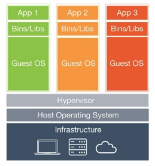
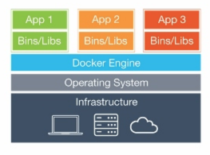
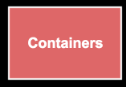
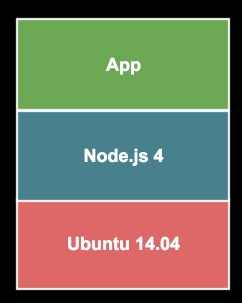
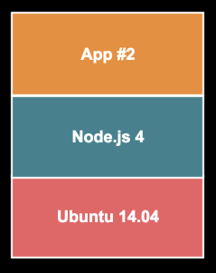
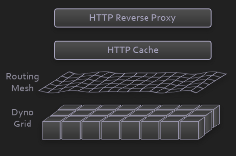
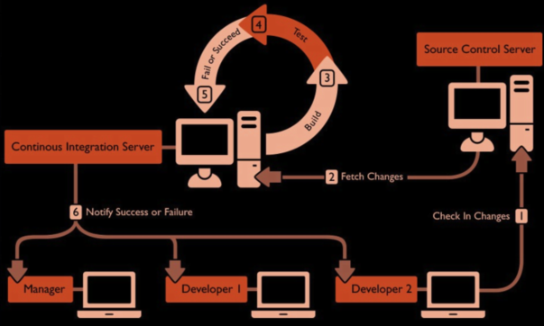
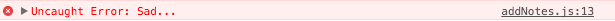

Ешь, молись, люби
Build, Deploy, Automate
Dependencies


bower_components ├── backbone#53f7790 ├── moment#53f7790 ├── underscore#53f7790 └── magnific-popup#53f7790
node_modules ├─┬ hbs@4.0.0 │ ├─┬ handlebars@4.0.3 │ │ ├─┬ optimist@0.6.1 │ │ │ ├── minimist@0.0.10 │ │ │ └── wordwrap@0.0.3 │ │ ├─┬ source-map@0.4.4 │ │ │ └── amdefine@1.0.0 │ └─┬ walk@2.2.1 │ └─┬ forEachAsync@2.2.1 │ └── sequence@2.2.1 └─┬ morgan@1.7.0 ├── basic-auth@1.0.3 └── on-headers@1.0.1
npm
$ npm init
$ npm search
$ npm show express
$ npm install express
$ npm install --save express
$ npm install --save-dev mocha
$ npm install express@1.0.0
$ npm uninstall express
$ npm list
npm install
{
"dependencies": {
"express": "1.2.3",
"express": ">1.2.3",
"express": ">=1.2.3",
"express": "~1.2.3", // >=1.2.3 <1.3.0
"express": "^1.2.3", // >=1.2.3 <2.0.0
"express": "1.2.x",
"express": "latest",
"express": "git://github.com/expressjs/express.git",
"express": "git://github.com/expressjs/express.git#4.13.4",
"express": "git://github.com/expressjs/express.git#master",
"express": "git://github.com/expressjs/express.git#f3d99a4",
"express": "expressjs/express#f3d99a4"
}
}
Advanced Range Syntax
npm
Дубликаты
Windows API имеет ограничение на длину абсолютного пути к файлу
npm vs npm3

npm vs npm3

npm3

npm3

npm dedupe (deduplicate)
Упрощает структуру зависимостей,
делая её максимально плоской
и устраняя дублирование

npm outdated
Находит устаревшие зависимости
$ npm outdated --depth=1
Package Current Wanted Latest Location mocha 2.3.3 2.3.3 2.4.5 mocha nodemon 1.8.0 1.8.0 1.9.1 nodemon lodash 3.10.1 3.10.1 4.6.1 lodash supertest 1.1.0 1.1.0 1.2.0 supertest vow 0.4.11 0.4.12 0.4.12 vow-fs > vow
$ npm update
Установка зависимости
- Поиск архива с нужной версией
- Скачивание
- Распаковка
- Компилирование (по необходимости)
npm cache
Кеширует зависимости
(по умолчанию, автоматически)
/home/gogoleff/.npm (unix)
/Users/gogolеff/AppData/Local/npm-cache (windows)
$ npm cache clean
.npmrc
save-exact=true // Default is false
progress=false // Hides progress (perfomance boost)
init-license=MIT // Sets npm init default license
init-author-name='Sergey Gogolev'
npm publish
Публикует пакет в репозиторий
// package.json
{
"name": "notes",
"version": "1.0.0"
}
$ npm version minor // 1.1.0
$ npm publish
$ npm publish --tag beta
$ npm install express@beta
npm publish
// package.json
{
"name": "notes",
"main": "./dist/index.js"
}
const notes = require('notes');
Codestyle
let foo = 1,
bar = 2,
baz = 3;
vs
let foo = 1;
let bar = 2;
let baz = 3;
spaces vs tabs
Использование let и const
const pi = 3.141592653589;
const e = 2.71828182;
const φ = 1.618033988;
for(let i = 0; i < 10; i++) {
console.log(i);
}
Максимальная вложенность блоков
if (user.isAuthorized) {
if (notes.length > 0) {
for(let i = 0; i < note.length; i++) {
console.log(notes[i]);
}or
} else {
console.log('Notes not found!')
}
}
Беcполезное code review
exports.list = function (req, res) { //Use arrow
let notes = Note.findAll(); // Use const
let data = { // Use const
notes: notes,
meta: req['meta'] // Use dot operator
};
res.render('notes', data);
};
Codestyle помогает
Ускорить восприятие кода всей команды
Избежать конфликтов
Избежать типичных ошибок в коде
Сделать код качественнее
codestyle.md
# Variable declaration
* Each variable should be declared:
* using a var statement;
* only once in the current scope;
* on a new line;
* as close as possible to the place
where it's first used.
* Each var statement should have only
one variable declared in it.
Цикломатическая сложность: 3
function getNotes() {
if (user.isAuthorized) {
return null; // Первый путь
}
if (notes.length) {
return notes; // Второй путь
} else {
return null; // Третий путь
}
}

.editorconfig
app/ └── app.js └── .editorconfig
[*]
indent_size = 4
indent_style = space
insert_final_newline = true
[*.json]
indent_size = 2


eslint
$ npm install --save-dev eslint
app/ └── app.js └── routes.js └── models └── controllers └── views └── public └── .eslintrc.json
.eslintrc.json
{
"parserOptions": {
"ecmaVersion": 6
},
"env": {
"browser": true,
"node": true
},
"rules": {
"dot-notation": 2,
"no-unused-vars": 1,
"no-empty": 2,
"max-len": [2, 100],
"max-params": [2, 3],
}
}
.eslintrc.json
{
"rules": {
"dot-notation": 2,
"no-unused-vars": 1,
"max-len": [2, 100],
"max-params": [2, 3],
}
}
0 - off 1 - warn 2 - erroreslint.org/docs/rules
.eslintrc.json
$ npm install --save-dev eslint-config-xo
{
"extends": "xo",
"rules": {
"max-len": [2, 79],
"max-params": [2, 3],
}
}
.eslintignore
app/ └── app.js └── routes.js └── .eslintrc.json └── .eslintignore
build/
**/*.coffee.js
node_modules
/* eslint no-unused-vars: 0 */
/* eslint max-params: [2, 4] */
function onError(err, req, res, next) {
res.sendStatus(500);
}
eslint
$ node_modules/.bin/eslint

eslint ♡ atom

$ node_modules/.bin/eslint --fix
Abstract syntax tree
let pi = 3.14

{
"type": "Program",
"body": [
{
"type": "VariableDeclaration",
"declarations": [{
"type": "VariableDeclarator",
"id": {
"type": "Identifier",
"name": "pi"
},
"init": {
"type": "Literal",
"value": 3.14,
}
}],
"kind": "let"
}
]
}Abstract syntax tree
astexplorer.net jointjs.com/demos/javascript-ast

CSScomb
Немного правил
Автоматическое исправление ошибок
Автоматическая группировка свойств
.tooltip {
position: absolute;
width: 200px;
height: 40px;
font-size: 16px;
}
Stylelint
Нет автоматического исправления ошибок
Более 100 правил
Пресеты
$ npm install --save-dev stylelint stylelint-config-standardnpmjs.com/search?q=stylelint-config
Scripts
Задачи
- Запуск dev сервера
- Сборка статики (js, css)
- Запуск тестов
- Проверка codestyle
Цель
Запуск комплексных команд в виде простых запоминающихся алиасов к ним
Инструменты
const gulp = require('gulp');
const jshint = require('gulp-jshint');
gulp.task('lint', () => {
gulp
.src('*.js')
.pipe(jshint())
});
$ gulp lint
Инструменты
lint:
node_modules/.bin/stylelint **/*.css
node_modules/.bin/eslint .
test: lint
node_modules/.bin/mocha test/
$ make test
Инструменты
{
"name": "notes",
"scripts": {
"test": "node_modules/.bin/mocha test/",
"lint:js": "node_modules/.bin/eslint ."
}
}
$ npm run test
.bin
{
"name": "mocha",
"bin": {
"mocha": "./path/to/index.js",
}
}
$ npm install mocha
node_modules/.bin/mocha -> ../mocha/path/to/index.js
npm scripts
{
"name": "notes",
"scripts": {
"test": "node_modules/.bin/mocha test/"
"test": "mocha test/"
}
}
$ mocha
$ echo $PATH
/Users/gogoleff/bin:/usr/local/bin:/usr/local/bin:/usr/bin:/bin
npm добавляет node_modules/.bin/ в PATH
npm scripts
Scripts shortcuts
$ npm run test$ npm test
$ npm start
$ npm stop
npm scripts
Console commands
"scripts": {
"clean": "rm -rf node_modules/"
}
Помним о мультиплатформе
"scripts": {
"clean": "rimraf node_modules/"
}
$ npm install rimraf
npm scripts
Series commands
"scripts": {
"check:lint": "eslint .",
"check:test": "mocha test/"
"check": "npm run lint && npm run mocha"
}
"scripts": {
"build": "npm-run-all check:lint check:test"
}
npm scripts
Parallel commands
"scripts": {
"lint:css": "stylelint **/*.css",
"lint:js": "eslint .",
"lint": "npm run lint:css & npm run lint:js"
}
"scripts": {
"lint": "npm-run-all --parallel lint:css lint:js"
}
npm scripts
Streams
"scripts": {
"css:pre": "stylus main.styl > main.css",
"css:post": "autoprefixer -b < main.css | cssmin"
}
npm scripts
Groups
"scripts": {
"lint:css": "stylelint **/*.css",
"lint:js": "eslint .",
"lint": "npm-run-all --parallel lint:*"
}
npm scripts
Configuration
"config": {
"report": "nyan"
},
"scripts": {
"test": "mocha test/ -R $npm_package_config_report"
}
npm scripts
External scripts
const favicons = require('favicons');
favicons({
source: 'public/logo.png',
dest: 'public/'
});
"scripts": {
"build:favicon": "node favicon.js"
}
npm scripts
Arguments
"scripts": {
"start": "node app.js",
}
$ npm run start -- --mode=debug
npm scripts
Hooks
$ npm install --save-dev husky
"scripts": {
"precommit": "npm run test",
"prepush": "npm run test",
"prepublish": "npm run test"
}
npm scripts
Deploy
FTP, SCP, rsync

Конфликт за ресурсы
Virtualization
Изолирование дерева процессов и ресурсов (memory, cpu, disc)
Containers
Не требуют OS и могут содержать только приложение
Containers
Потребляют меньше ресурсов
Управление контейнерами менее требовательно к ресурсам
Быстрее запуск
Изоляция уязвима
Linux-only или windows-only

Docker Hub – хранилище контейнеров
Docker Tools – утилиты для сборки, публикации и запуска
Docker Images – read-only образы
Docker Images

Docker Images

Из образов создаются экземпляры контейнеров
Облачная PaaS-платформа
Heroku
Контейнеры в Heroku - Dyno
Heroku
Больше нагрузка - больше контейнеров
Heroku
toolbelt.heroku.com
$ heroku
Heroku
app/ └── app.js └── routes.js └── models └── controllers └── views └── public └── package.json
"engines": {
"node": "4.4.0"
}
Heroku
app/ └── app.js └── routes.js └── models └── controllers └── views └── public └── package.json
app.listen(process.env.PORT || 5000)
Heroku
app/ └── app.js └── routes.js └── models └── controllers └── views └── public └── package.json └── Procfile
web: node app.js
<process type>: <command>
Heroku
$ heroku local web
forego | starting web.1 on port 5000 web.1 | Listening on port 5000 web.1 | GET / 200 35.429 ms - 410 web.1 | GET /favicon.ico 404 2.047 ms - 9
http://localhost:5000/
Heroku
$ heroku login
$ heroku create urfu2015-notes
Creating urfu2015-notes... done, stack is cedar-14 https://urfu2015-notes.herokuapp.com/ | https://git.heroku.com/urfu2015-notes.git
Heroku
$ git push heroku master
remote: Compressing source files... done. remote: Building source: remote: remote: -----> Using set buildpack heroku/nodejs remote: -----> Node.js app detected remote: remote: -----> Creating runtime environment remote: remote: NODE_ENV=production remote: NODE_MODULES_CACHE=true remote: remote: -----> Installing binaries remote: engines.node (package.json): 4.4.0urfu2015-notes.herokuapp.com
Heroku
$ heroku logs
$ heroku ps:scale web=1:Free
$ heroku ps:scale web=2 Scaling dynos... failed ! Cannot update to more than 1 Free size dynos per process type.
CDN
Статика
Не зависит от состояния приложения
Не меняется в рамках одной версии
Требует в основном сетевые ресурсы
app/ └── app.js └── routes.js └── models └── controllers └── views └── public └── index.css └── index.js
Задача
Разместить статику ближе к пользователю
Content Delivery Network
Географически распределённая сетевая инфраструктура
Content Delivery Network


Unicast
One Machine, One IP

Anycast
Many Machines, One IP

BGP
Border Gateway Protocol

Задачи
Размещение статики ближе к пользователю
Кеширование
Сжатие текстовой статики (gzip):
html, css, js, json, ...
Обеспечение 100% доступности


Выбираем
Количество точек присутствия
Point of Presence
Политика кеширования
Политика устаревания
API
Surge
$ npm install --save-dev surge
"scripts": {
"deploy:static": "surge -p ./public"
}
$ npm run deploy:static
Surge

Surge
"scripts": {
"deploy:static": "surge -p ./public -d urfu2015..."
}
<!DOCTYPE html>
<html lang="en">
<head>
<meta charset="utf-8">
<title>{{ title }}</title>
<link rel="stylesheet" href="/index.css">
<link rel="stylesheet"
href="http://urfu2015-notes.surge.sh/index.css">
</head>
<body>
{{{ body }}}
<script src="/index.js"></script>
<script src="http://urfu2015-notes.surge.sh/index.js"></script>
</body>
</html>
Обновить кеш у пользователя
Response
HTTP/1.1 200 OK
Cache-Control: public, max-age=31536000, no-cache
Content-Type: text/css; charset=UTF-8
ETag: d1d3c5c4cdb2568785ba1a366b7fb048
Server: SurgeCDN/0.12.2
body {
font-family: Arial, sans-serif;
}
Обновить кеш у пользователя
Request
GET /index.css HTTP/1.1
Host: urfu2015-notes.surge.sh
If-None-Match: d1d3c5c4cdb2568785ba1a366b7fb048
ETag === If-None-Match
Response
HTTP/1.1 304 Not Modified
Content Delivery Network
Знакомство с Content Delivery Network
Automate
Continuous Integration
Автоматизированная сборка и тестирование исходного кода по факту изменения
Continuous Deployment
Автоматизированный деплой приложения
Continuous Integration
Polling vs hooks
Continuous Integration
Автоматизация рутины
Неизбежное тестирование кода
Быстрая доставка до конечного пользователя
Сервисы
.travis.yml
language: node_js
node_js:
- "4"
install:
- npm install
script:
- npm run lint
- npm test
.travis.yml
after_success:
- '[ "${TRAVIS_PULL_REQUEST}" = "false" ] && \
npm run deploy:static'
.travis.yml
deploy:
skip_cleanup: true
provider: heroku
api_key:
secure: "RYtDTxQ+oCsAc5KTR+YtpdHWHlN7Ml+PWHsPul3Wdho6an8pvXhfTdMcg3sxncTji8DyOinEJQVYxaX61dw/dtd1fF7n06WWeFiXjlXAAp+17ySauWkwbFFicylrylYAl6nnC6Rw/T2FJ7Z3w4QQR377j8cgY5Ra9h3mSi7sT12xkfBYgjtyDDrajTASB5ZA3Hn9J9nRlg5Q52LIGMnGWkad+qF6MJfo5kja04YgrlAyqnPKVoxsL7k0fG0ZBjvg971DOBrxf2kt89hP7PWoXB4oOm3aNHBg7GFbyIF9qOspNcEIECjFLFaARIA556seK4zZe523HjvfSrf6QbCXsRkFEiY+zEOzUtE4KrfP9Igu+hZ9IVcLeDu2jrDnpJHRtMgFvgSbdmHExdzTbMDEBrZjfCC6N+5FjbD9HuGjW35bQ+UtneSP+dZI2xdGsFZhrlhym/zrij2DcAh9d9XS0EdIZTr0QFwg6PvyKW1EMX1zpOl02i4suVSw/Bw+C+usG3qaSOdDLvnYAYe0dKWK7wYLHxVG/6yUaN1BV8BF8mxmKqEuXRfiOnBNrPvWIJDmEZ8SOs2tlsDAK+1iTME+R2U/ivwERWP7DuJ8lOWqwCLQTtRx73CBmzWq6RvoBOZJR0BV2rCrMvZyFX6KnDj4Df5PyvfWez3lcSt2P7GjYuk="
on: master
app: urfu2015-notes
$ travis encrypt $(heroku auth:token)
Структура проекта
notes
├── .gitignore
├── .editorconfig
├── package.json
├── README.md
└── index.js
Сервис «Заметки»
Храним заметки пользователя в виде файлов
GET / главная
GET /notes список заметок
POST /notes добавление заметки
GET /notestodo-list просмотр заметки
MVC. Model
notes ├── .gitignore ├── .editorconfig ├── package.json ├── README.md ├── index.js └─┬ models └── note.js
MVC. View
notes ├── .gitignore ├── .editorconfig ├── package.json ├── README.md ├── index.js ├── models └─┬ views ├── main.hbs ├── note.hbs └── notes.hbs
MVC. Controller
notes ├── .gitignore ├── .editorconfig ├── package.json ├── README.md ├── index.js ├── models ├── views └─┬ controllers ├── notes.js └── pages.js
Компонентный подход
notes ├── .gitignore ├── .editorconfig ├── package.json ├── README.md ├── index.js ├── models ├── views ├── controllers └─┬ blocks ├─┬ footer │ ├── footer.css │ └── footer.hbs ├─┬ header │ ├── header.css │ ├── header.js │ └── header.hbs └─┬ notes ├── notes.css ├── notes.js └── notes.hbs
Компонентный подход
Меньше вероятность конфликтов
Легкое переиспользование кода
Компонентный подход. Ресурсы
└─┬ blocks
├─┬ footer
│ ├── footer.css
│ └── footer.hbs
├─┬ header
│ ├── header.css
│ ├── header.js
│ └── header.hbs
└─┬ notes
├── notes.css
├── notes.js
└── notes.hbs
Публичная папка
public
├── footer.css
├── header.css
├── notes.css
├── header.js
└── notes.js
Компонентный подход. Подключение
<head>
<link href="/footer.css" rel="stylesheet">
<link href="/header.css" rel="stylesheet">
<link href="/notes.css" rel="stylesheet">
<script src="/header.js"></script>
<script src="/notes.js"></script>
</head>Работает
Много запросов за ресурсами
Много копирований при сборке
Ограничение на количество подключаемых ресурсов
webpack
npm install --save-dev webpack
Сборка скриптов
notes
└── webpack.config.js
{
context: __dirname + "/blocks",
entry: "blocks/mainPage.js",
output: {
path: __dirname + "/public",
filename: "mainPage.bundle.js"
}
}
notes
└─┬ blocks
└── mainPage.js
var header = require('./header/header.js');
var notes = require('./notes/notes.js');
header.init();
notes.init();
Запуск
notes
└── package.json
"scripts": {
"build": "webpack"
}
npm run build
notes
└─┬ public
├── footer.css
├── header.css
├── notes.css
└── mainPage.bundle.js
Подключение
<head>
<link href="/footer.css" rel="stylesheet">
<link href="/header.css" rel="stylesheet">
<link href="/notes.css" rel="stylesheet">
<script src="/mainPage.bundle.js"></script>
</head>Сборка стилей
notes
└─┬ blocks
└── mainPage.css
@import header/header.css
@import notes/notes.css
@import footer/footer.css
notes
└─┬ blocks
├── mainPage.css
└── mainPage.js
require('./mainPage.css');
npm run build
You may need an appropriate
loader to handle this file type.
Лоадеры
npm install style-loader --save-dev
npm install css-loader --save-dev
notes
└── webpack.config.js
{
...
module: {
loaders: [
{test: /\.css$/, loaders: ["style", "css"]}
]
}
}
<head>
<style type="text/css">
body {
font-family: Arial, sans-serif;
}
</style>
<style type="text/css">
header {
border-bottom: 1px solid #ccc;
}
</style>
</head>notes
└── webpack.config.js
var ExtractTextPlugin =
require('extract-text-webpack-plugin');
module.exports = {
...
plugins: [
new ExtractTextPlugin("bundle.css")
]
}
notes
└── webpack.config.js
module: {
loaders: [
{
test: /\.css$/,
loader: ExtractTextPlugin
.extract('style-loader', 'css-loader')
}
]
}
notes
└─┬ public
├── bundle.css
└── mainPage.bundle.js
Подключение
<head>
<link href="/bundle.css" rel="stylesheet">
<script src="/mainPage.bundle.js"></script>
</head>Сборка картинок
notes
└─┬ blocks
└─┬ notes
├── notes.css
├── notes.js
├── background.png
└── notes.hbs
notes
└─┬ blocks
└─┬ notes
└── notes.css
.notes {
background: url(background.png)
}
Лоадеры
npm install file-loader --save-dev
notes
└── webpack.config.js
module: {
loaders: [
{
test: /(\.png|\.jpg)$/,
loader: "file-loader"
}
]
}
notes
└─┬ public
├── bundle.css
├── mainPage.bundle.js
└── 9d86ab26bc61bc94bf09d352edff07a1.png
расстановка браузерных префиксов
линтинг
конвертация картинок в base64 код
...
расстановка браузерных префиксов
notes
└─┬ blocks
└─┬ notes
└── notes.css
.notes {
display: flex;
}
postcss
npm i --save-dev postcss-loaderautoprefixer
npm i --save-dev autoprefixernotes
└── webpack.config.js
var autoprefixer = require('autoprefixer');
module.exports = {
...
postcss: function () {
return [autoprefixer];
}
}
notes └── webpack.config.js
module: {
loaders: [
...
{
test: /\.css$/,
loader: ExtractTextPlugin.extract(
"style-loader",
"css-loader"
)
}
До
.notes {
display: flex;
}
После
.notes {
display: -webkit-box;
display: -webkit-flex;
display: -ms-flexbox;
display: flex;
}
Минификация CSS
notes
└─┬ blocks
└─┬ notes
└── notes.css
.notes {
div { margin: 0 0 0 0; }
div {
display: -webkit-box;
display: -webkit-flex;
display: -ms-flexbox;
display: flex;
}
}
notes
└─┬ blocks
└─┬ notes
└── notes.css
.notes {
div { margin: 0 0 0 0; }
div {
display: -webkit-box;
display: -webkit-flex;
display: -ms-flexbox;
display: flex;
}
}
notes
└─┬ blocks
└─┬ notes
└── notes.css
.notes {
div { margin: 0 0 0 0; }
div {
display: -webkit-box;
display: -webkit-flex;
display: -ms-flexbox;
display: flex;
}
}
notes
└─┬ blocks
└─┬ notes
└── notes.css
.notes {
div { margin: 0 0 0 0; }
div {
display: -webkit-box;
display: -webkit-flex;
display: -ms-flexbox;
display: flex;
}
}
notes
└─┬ blocks
└─┬ notes
└── notes.css
.notes {
div { margin: 0 0 0 0; }
div {
display: -webkit-box;
display: -webkit-flex;
display: -ms-flexbox;
display: flex;
}
}
cssnano
npm i --save-dev cssnanonotes
└── webpack.config.js
var cssnano = require('cssnano');
module.exports = {
...
postcss: function () {
return [
autoprefixer,
cssnano
];
}
}
До
.notes {
div { margin: 0 0 0 0; }
div {
display: -webkit-box;
display: -webkit-flex;
display: -ms-flexbox;
display: flex;
}
}
После
div{margin:0;display:-webkit-box;display:-webkit-flex;display:-ms-flexbox;display:flex}
Минификация JS
notes
└── webpack.config.js
var webpack = require('webpack');
module.exports = {
...
plugins: [
...
new webpack.optimize.UglifyJsPlugin()
]
}
После
!function(o){function n(e){if(t[e])return t[e]. ....
sourcemap
notes
└── webpack.config.js
module.exports = {
...
devtool: 'source-map'
}
notes
└─┬ public
├── mainPage.bundle.js
└── mainPage.bundle.js.map
notes
└─┬ public
└── mainPage.bundle.js
...
//# sourceMappingURL=main.bundle.js.map
До
После
notes
└── webpack.config.js
module.exports = {
...
entry: {
mainPage: './mainPage.js',
innerPage: './innerPage.js'
}, output: {
filename: "[name].bundle.js"
}
}
подготовленного к сборке, деплою и автоматизации